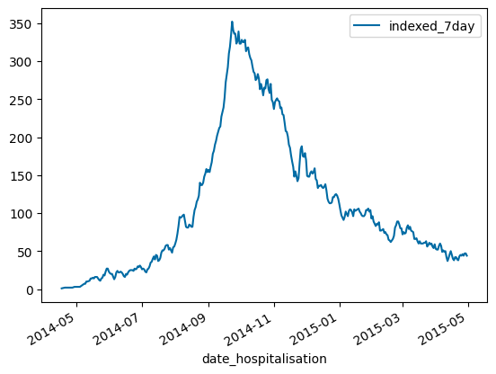
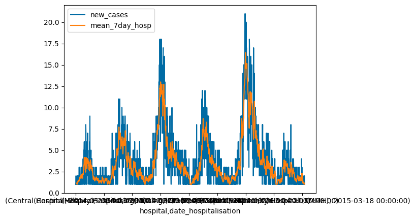

style.use('tableau-colorblind10')Moving Average
with reference to EpiRHandbook Chapter 17
Set up
To use colourbind colour schemes (optional). To get the color, see https://github.com/matplotlib/matplotlib/blob/main/lib/matplotlib/mpl-data/stylelib/tableau-colorblind10.mplstyle
Display multiple outputs from a single kernel
InteractiveShell.ast_node_interactivity = "all"pd.set_option('display.max_columns', 100) # set display options in pandas
pd.set_option('display.max_rows',100)
pd.set_option('display.width', 1000)Installation of Jupyter notebook extension is required for pandas_profiling. Also need to run
Data
Import data from https://github.com/appliedepi/epiRhandbook_eng/blob/master/data/linelist_cleaned.xlsx and then save under “epiRhandbook_data” folder.
Note: Installation of “openpyxl” is required.
linelist = pd.read_excel('epiRhandbook_data/linelist_cleaned.xlsx')No_of_line_display = 5
linelist.head(No_of_line_display)| case_id | generation | date_infection | date_onset | date_hospitalisation | date_outcome | outcome | gender | age | age_unit | age_years | age_cat | age_cat5 | hospital | lon | lat | infector | source | wt_kg | ht_cm | ct_blood | fever | chills | cough | aches | vomit | temp | time_admission | bmi | days_onset_hosp | |
|---|---|---|---|---|---|---|---|---|---|---|---|---|---|---|---|---|---|---|---|---|---|---|---|---|---|---|---|---|---|---|
| 0 | 5fe599 | 4 | 2014-05-08 | 2014-05-13 | 2014-05-15 | NaT | NaN | m | 2.0 | years | 2.0 | 0-4 | 0-4 | Other | -13.215735 | 8.468973 | f547d6 | other | 27 | 48 | 22 | no | no | yes | no | yes | 36.8 | NaN | 117.187500 | 2.0 |
| 1 | 8689b7 | 4 | NaT | 2014-05-13 | 2014-05-14 | 2014-05-18 | Recover | f | 3.0 | years | 3.0 | 0-4 | 0-4 | Missing | -13.215234 | 8.451719 | NaN | NaN | 25 | 59 | 22 | NaN | NaN | NaN | NaN | NaN | 36.9 | 09:36 | 71.818443 | 1.0 |
| 2 | 11f8ea | 2 | NaT | 2014-05-16 | 2014-05-18 | 2014-05-30 | Recover | m | 56.0 | years | 56.0 | 50-69 | 55-59 | St. Mark's Maternity Hospital (SMMH) | -13.212911 | 8.464817 | NaN | NaN | 91 | 238 | 21 | NaN | NaN | NaN | NaN | NaN | 36.9 | 16:48 | 16.065250 | 2.0 |
| 3 | b8812a | 3 | 2014-05-04 | 2014-05-18 | 2014-05-20 | NaT | NaN | f | 18.0 | years | 18.0 | 15-19 | 15-19 | Port Hospital | -13.236371 | 8.475476 | f90f5f | other | 41 | 135 | 23 | no | no | no | no | no | 36.8 | 11:22 | 22.496571 | 2.0 |
| 4 | 893f25 | 3 | 2014-05-18 | 2014-05-21 | 2014-05-22 | 2014-05-29 | Recover | m | 3.0 | years | 3.0 | 0-4 | 0-4 | Military Hospital | -13.222864 | 8.460824 | 11f8ea | other | 36 | 71 | 23 | no | no | yes | no | yes | 36.9 | 12:60 | 71.414402 | 1.0 |
Browse data
df_date_hosp = pd.DataFrame(list(zip(linelist['date_hospitalisation'], linelist['case_id'])), columns=['date_hospitalisation', 'case_id'])
df_date_hosp| date_hospitalisation | case_id | |
|---|---|---|
| 0 | 2014-05-15 | 5fe599 |
| 1 | 2014-05-14 | 8689b7 |
| 2 | 2014-05-18 | 11f8ea |
| 3 | 2014-05-20 | b8812a |
| 4 | 2014-05-22 | 893f25 |
| ... | ... | ... |
| 5883 | 2015-04-22 | 76d8fe |
| 5884 | 2015-04-24 | dd6664 |
| 5885 | 2015-04-25 | 635ef3 |
| 5886 | 2015-04-26 | 4b859a |
| 5887 | 2015-04-30 | 2068d6 |
5888 rows × 2 columns
df_case_cnt = df_date_hosp.groupby('date_hospitalisation').count()
df_case_cnt = df_case_cnt.rename(columns={'case_id': 'new_cases'})
df_case_cnt| new_cases | |
|---|---|
| date_hospitalisation | |
| 2014-04-17 | 1 |
| 2014-04-20 | 1 |
| 2014-04-25 | 1 |
| 2014-04-27 | 1 |
| 2014-04-29 | 1 |
| ... | ... |
| 2015-04-26 | 9 |
| 2015-04-27 | 6 |
| 2015-04-28 | 8 |
| 2015-04-29 | 8 |
| 2015-04-30 | 4 |
363 rows × 1 columns
window is the ROW and 6 prior ROWS
df_case_cnt['reg_7day'] = df_case_cnt['new_cases'].rolling(7).sum()
df_case_cnt.head(20)| new_cases | reg_7day | |
|---|---|---|
| date_hospitalisation | ||
| 2014-04-17 | 1 | NaN |
| 2014-04-20 | 1 | NaN |
| 2014-04-25 | 1 | NaN |
| 2014-04-27 | 1 | NaN |
| 2014-04-29 | 1 | NaN |
| 2014-05-02 | 1 | NaN |
| 2014-05-04 | 1 | 7.0 |
| 2014-05-05 | 1 | 7.0 |
| 2014-05-06 | 2 | 8.0 |
| 2014-05-08 | 2 | 9.0 |
| 2014-05-09 | 1 | 9.0 |
| 2014-05-10 | 3 | 11.0 |
| 2014-05-11 | 1 | 11.0 |
| 2014-05-13 | 4 | 14.0 |
| 2014-05-14 | 3 | 16.0 |
| 2014-05-15 | 2 | 16.0 |
| 2014-05-16 | 2 | 16.0 |
| 2014-05-17 | 2 | 17.0 |
| 2014-05-18 | 3 | 17.0 |
| 2014-05-20 | 4 | 20.0 |
window is the Day and 6 prior days
df_case_cnt['indexed_7day'] = df_case_cnt['new_cases'].rolling('7D').sum()
df_case_cnt.head(20)| new_cases | reg_7day | indexed_7day | |
|---|---|---|---|
| date_hospitalisation | |||
| 2014-04-17 | 1 | NaN | 1.0 |
| 2014-04-20 | 1 | NaN | 2.0 |
| 2014-04-25 | 1 | NaN | 2.0 |
| 2014-04-27 | 1 | NaN | 2.0 |
| 2014-04-29 | 1 | NaN | 3.0 |
| 2014-05-02 | 1 | NaN | 3.0 |
| 2014-05-04 | 1 | 7.0 | 3.0 |
| 2014-05-05 | 1 | 7.0 | 4.0 |
| 2014-05-06 | 2 | 8.0 | 5.0 |
| 2014-05-08 | 2 | 9.0 | 7.0 |
| 2014-05-09 | 1 | 9.0 | 7.0 |
| 2014-05-10 | 3 | 11.0 | 10.0 |
| 2014-05-11 | 1 | 11.0 | 10.0 |
| 2014-05-13 | 4 | 14.0 | 11.0 |
| 2014-05-14 | 3 | 16.0 | 14.0 |
| 2014-05-15 | 2 | 16.0 | 14.0 |
| 2014-05-16 | 2 | 16.0 | 15.0 |
| 2014-05-17 | 2 | 17.0 | 14.0 |
| 2014-05-18 | 3 | 17.0 | 16.0 |
| 2014-05-20 | 4 | 20.0 | 16.0 |
df_case_cnt.plot(y='indexed_7day')<AxesSubplot: xlabel='date_hospitalisation'>
Rolling by group
df_grouped_roll = pd.DataFrame(list(zip(linelist['hospital'], linelist['date_hospitalisation'], linelist['case_id'])), columns=['hospital','date_hospitalisation', 'case_id'])
df_grouped_roll| hospital | date_hospitalisation | case_id | |
|---|---|---|---|
| 0 | Other | 2014-05-15 | 5fe599 |
| 1 | Missing | 2014-05-14 | 8689b7 |
| 2 | St. Mark's Maternity Hospital (SMMH) | 2014-05-18 | 11f8ea |
| 3 | Port Hospital | 2014-05-20 | b8812a |
| 4 | Military Hospital | 2014-05-22 | 893f25 |
| ... | ... | ... | ... |
| 5883 | Military Hospital | 2015-04-22 | 76d8fe |
| 5884 | Port Hospital | 2015-04-24 | dd6664 |
| 5885 | Missing | 2015-04-25 | 635ef3 |
| 5886 | Port Hospital | 2015-04-26 | 4b859a |
| 5887 | Port Hospital | 2015-04-30 | 2068d6 |
5888 rows × 3 columns
df_grouped_roll['hospital'].unique()array(['Other', 'Missing', "St. Mark's Maternity Hospital (SMMH)",
'Port Hospital', 'Military Hospital', 'Central Hospital'],
dtype=object)df_grouped_roll_CH = df_grouped_roll.query('hospital=="Central Hospital"')
df_grouped_roll_CH = df_grouped_roll_CH.groupby('date_hospitalisation').count()
df_grouped_roll_CH = df_grouped_roll_CH.rename(columns={'case_id': 'new_cases'})
df_grouped_roll_CH['indexed_7day'] = df_grouped_roll_CH['new_cases'].rolling('7D').mean()
df_grouped_roll_CH.drop('hospital', axis=1, inplace=True)
df_grouped_roll_CH| new_cases | indexed_7day | |
|---|---|---|
| date_hospitalisation | ||
| 2014-05-06 | 1 | 1.000000 |
| 2014-05-10 | 1 | 1.000000 |
| 2014-05-13 | 1 | 1.000000 |
| 2014-05-28 | 2 | 2.000000 |
| 2014-06-06 | 1 | 1.000000 |
| ... | ... | ... |
| 2015-04-21 | 1 | 1.333333 |
| 2015-04-22 | 1 | 1.250000 |
| 2015-04-23 | 1 | 1.200000 |
| 2015-04-26 | 2 | 1.400000 |
| 2015-04-28 | 3 | 1.750000 |
216 rows × 2 columns
def groupby_hosp_7mean(df, hosp_name):
df = df.query(f'hospital=="{hosp_name}"') ## important to have the double quote outside the input variable
df = df.groupby('date_hospitalisation').count()
df = df.rename(columns={'case_id': 'new_cases'})
df['indexed_7day'] = df['new_cases'].rolling('7D').mean()
df.drop('hospital', axis=1, inplace=True)
return dfhosp_name="Central Hospital"groupby_hosp_7mean(df_grouped_roll, "Central Hospital")| new_cases | indexed_7day | |
|---|---|---|
| date_hospitalisation | ||
| 2014-05-06 | 1 | 1.000000 |
| 2014-05-10 | 1 | 1.000000 |
| 2014-05-13 | 1 | 1.000000 |
| 2014-05-28 | 2 | 2.000000 |
| 2014-06-06 | 1 | 1.000000 |
| ... | ... | ... |
| 2015-04-21 | 1 | 1.333333 |
| 2015-04-22 | 1 | 1.250000 |
| 2015-04-23 | 1 | 1.200000 |
| 2015-04-26 | 2 | 1.400000 |
| 2015-04-28 | 3 | 1.750000 |
216 rows × 2 columns
df_grouped_roll_s = df_grouped_roll.groupby(['hospital', 'date_hospitalisation']).count()
df_grouped_roll_s = df_grouped_roll_s.rename(columns={'case_id': 'new_cases'})
df_grouped_roll_s| new_cases | ||
|---|---|---|
| hospital | date_hospitalisation | |
| Central Hospital | 2014-05-06 | 1 |
| 2014-05-10 | 1 | |
| 2014-05-13 | 1 | |
| 2014-05-28 | 2 | |
| 2014-06-06 | 1 | |
| ... | ... | ... |
| St. Mark's Maternity Hospital (SMMH) | 2015-04-15 | 1 |
| 2015-04-22 | 1 | |
| 2015-04-24 | 2 | |
| 2015-04-28 | 1 | |
| 2015-04-29 | 1 |
1617 rows × 1 columns
df_grouped_roll_s['mean_7day_hosp'] = df_grouped_roll_s['new_cases'].rolling(7).mean()df_grouped_roll_s| new_cases | mean_7day_hosp | ||
|---|---|---|---|
| hospital | date_hospitalisation | ||
| Central Hospital | 2014-05-06 | 1 | NaN |
| 2014-05-10 | 1 | NaN | |
| 2014-05-13 | 1 | NaN | |
| 2014-05-28 | 2 | NaN | |
| 2014-06-06 | 1 | NaN | |
| ... | ... | ... | ... |
| St. Mark's Maternity Hospital (SMMH) | 2015-04-15 | 1 | 1.000000 |
| 2015-04-22 | 1 | 1.000000 | |
| 2015-04-24 | 2 | 1.142857 | |
| 2015-04-28 | 1 | 1.142857 | |
| 2015-04-29 | 1 | 1.142857 |
1617 rows × 2 columns
df_grouped_roll_s.plot()<AxesSubplot: xlabel='hospital,date_hospitalisation'>